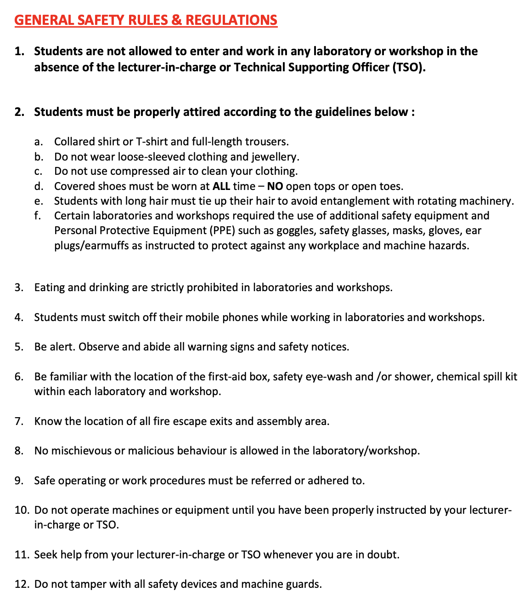
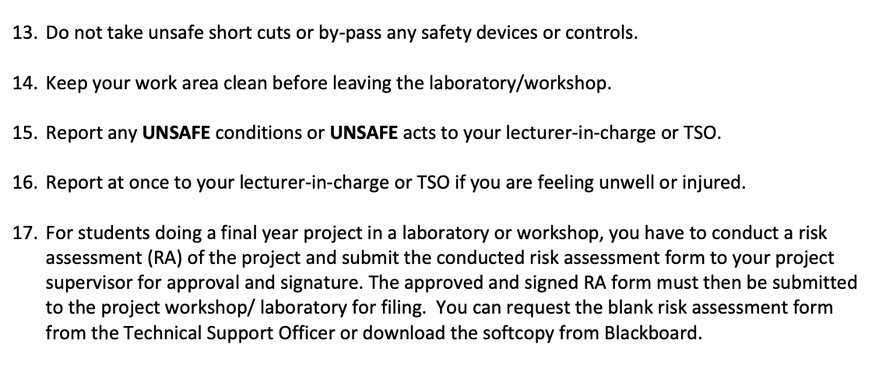
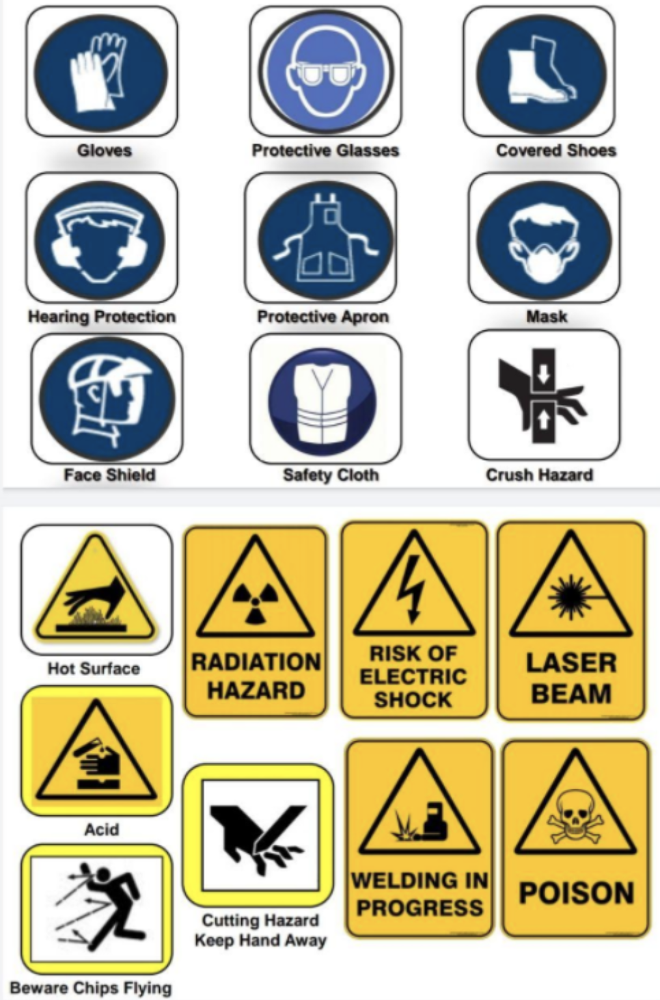
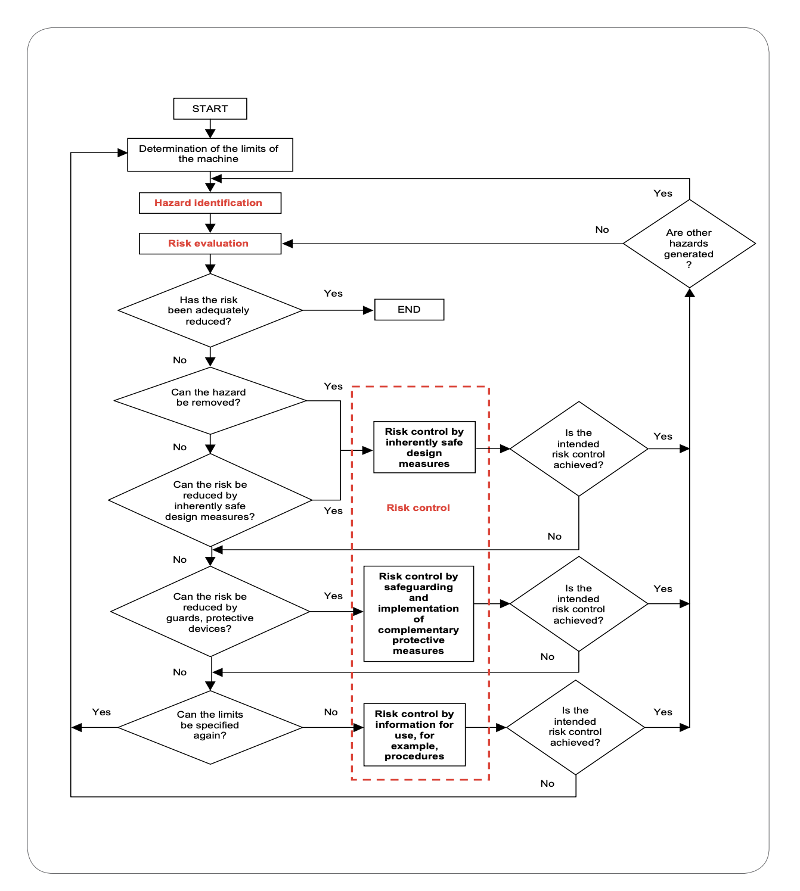
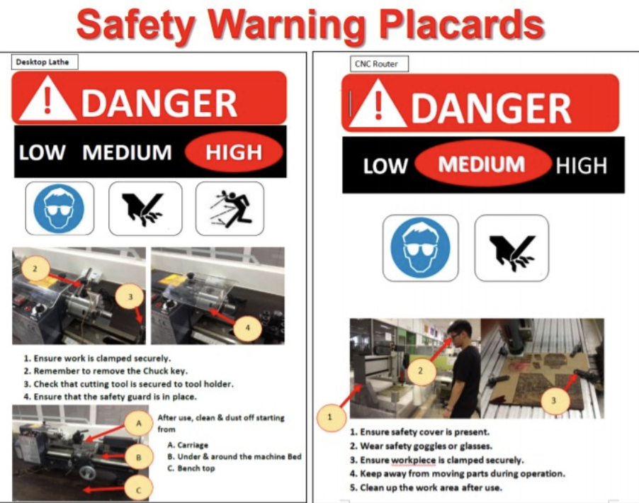
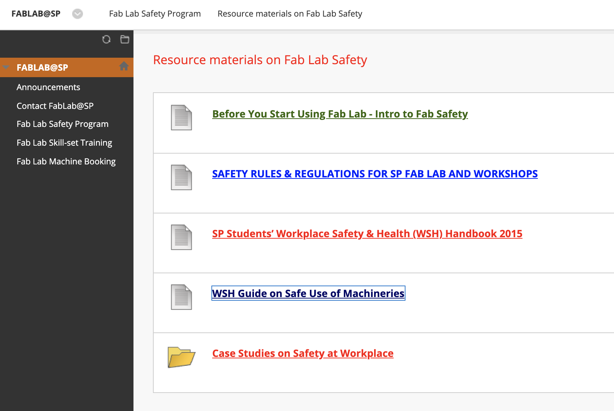
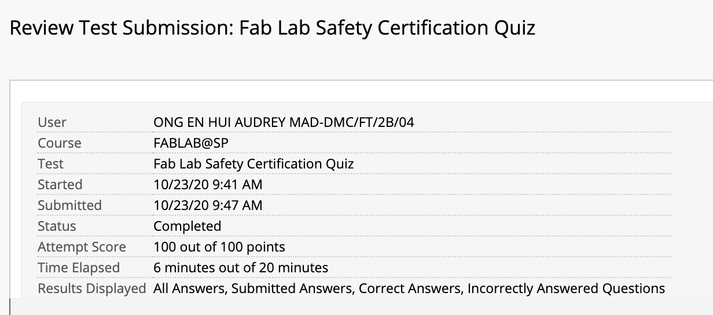

Safety
To do work in FABLAB and workshops, you must know the safety regulations well. Here are the general 17 rules you must know and comply to.
|  |  |
Here are some common safety signs:

Risk Management for machines
WSH Risk Management (RM) is a systematic way to identify, evaluate, control and monitor WSH risks associated with any work activity. It also needs on site implementations and control measures. In SP, we follow the Code of Practice on Workplace Safety and Health Risk Management. You can read up/find out more here.
This is the RA thought process for machines.
For risk assessment there are 3 stages:
They are:
Step 1: Hazard identification
Step 2: Risk evaluation
Step 3: Risk control
Look out for safety warning placards such as these:
Generally all materials can be found on Blackboard under My Community>Fablab@SP. Take the quiz once you are done to confirm your understanding of the material.
This is my score after taking the quiz:
Thank you! That's all :)
Last updated: 26th November 2020